Healthcare & InVera
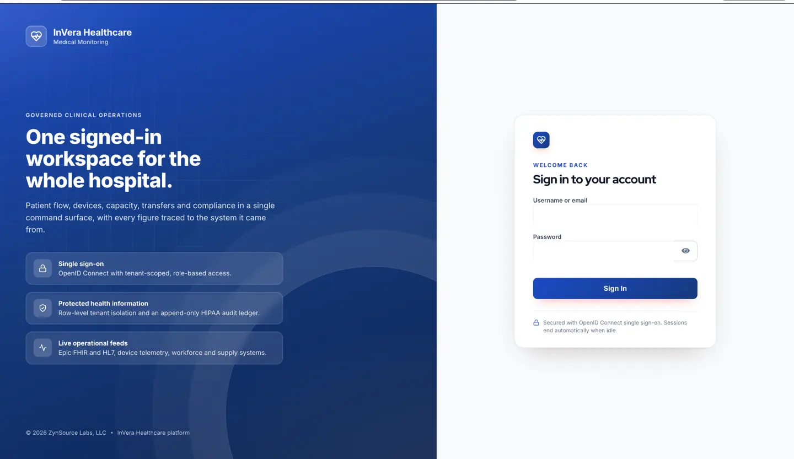
Secure clinical workspace
Clinical workflows in a governed application environment.
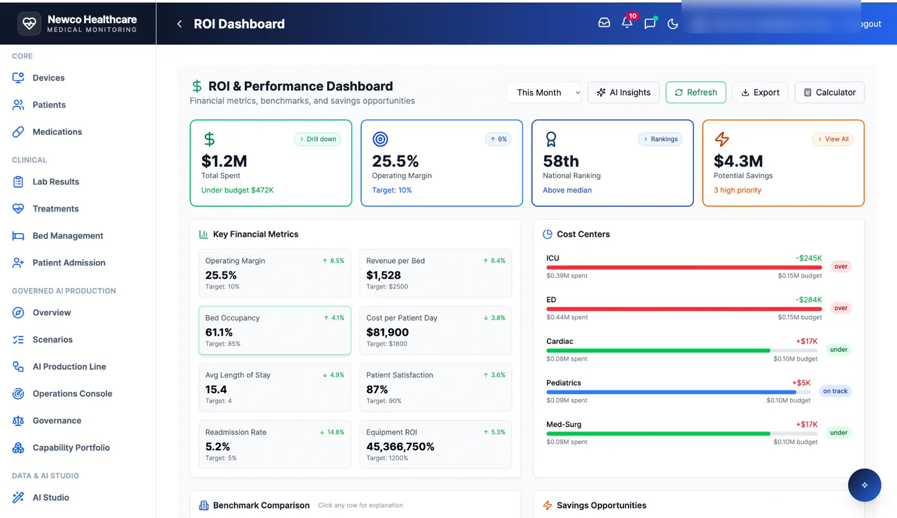
ROI & performance
Business and operating outcomes made visible.
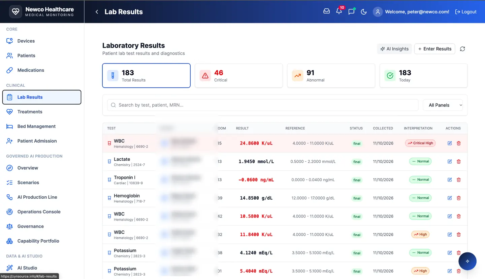
Laboratory operations
Operational visibility for complex laboratory processes.

Governed production
Oversight and engineering workflow controls.
Mining & industrial intelligence
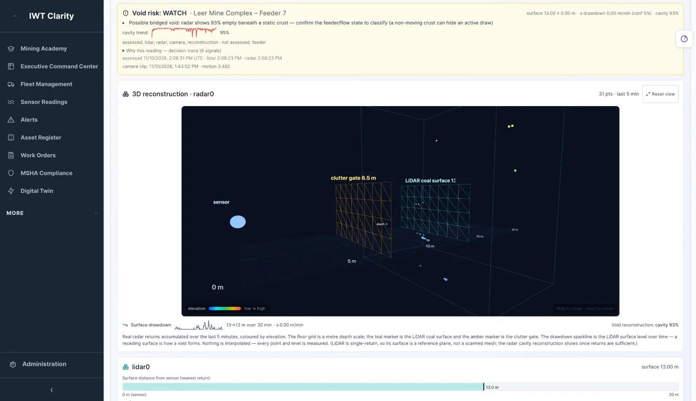
Coal void sensor fusion
Sensor-based industrial risk visualization.
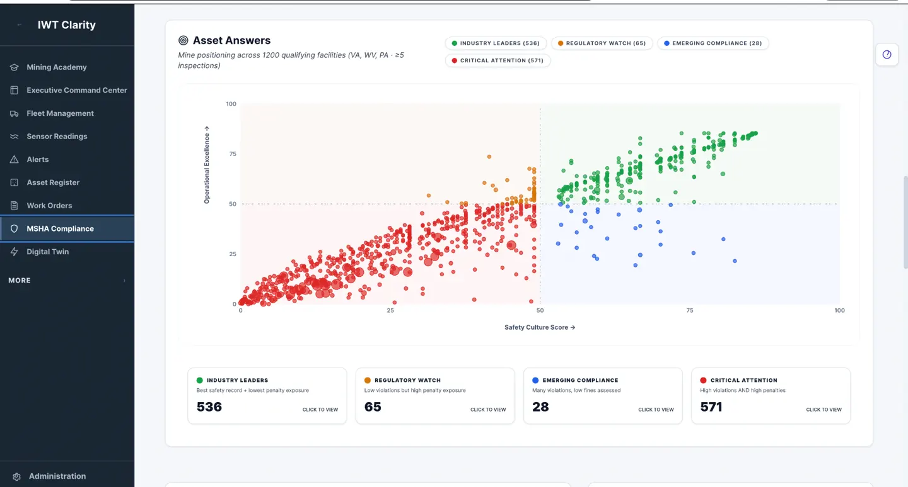
Safety and operational intelligence
Operational data in a decision-support interface.

Predictive maintenance
Equipment intelligence and digital-twin context.

Maintenance economics
Economic analysis for operational decisions.
Sales & enterprise operations
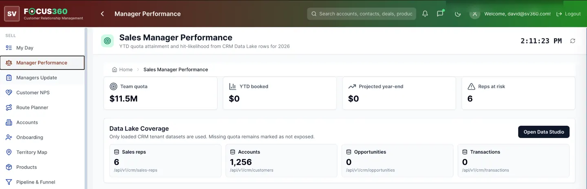
Manager performance
Operational coaching and performance visibility.
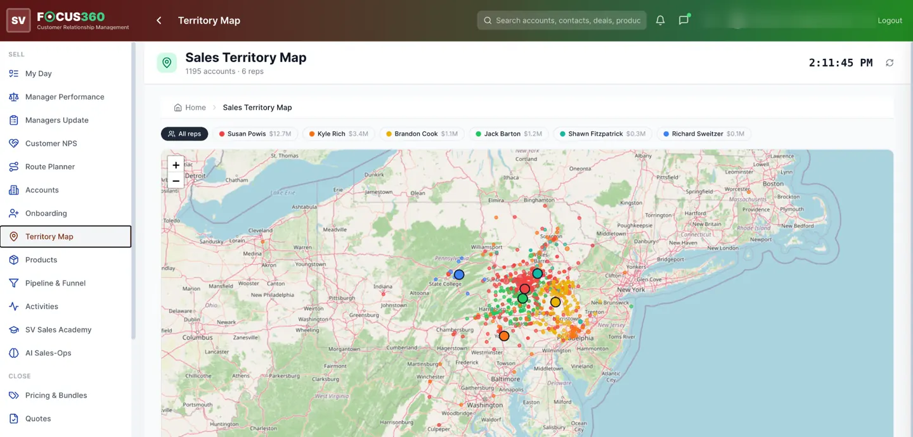
Territory intelligence
Sales territory analysis and business intelligence.
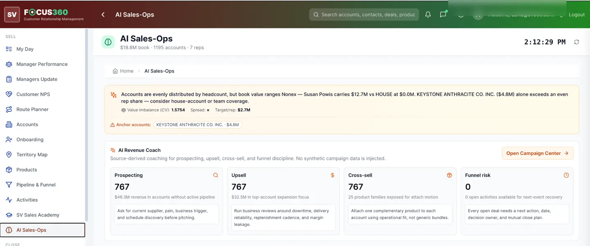
AI Sales-Ops
AI-assisted sales operations.
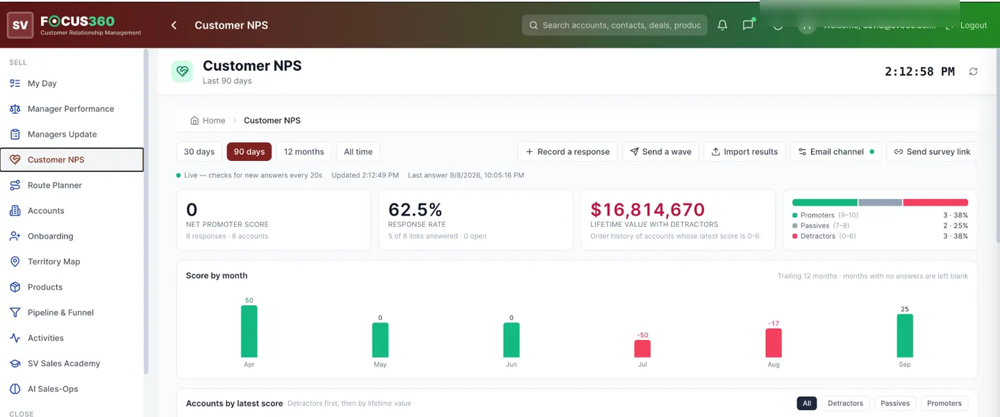
Customer NPS
Customer experience and feedback visibility.
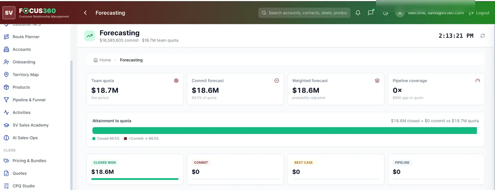
Sales forecasting
Forward-looking commercial planning.
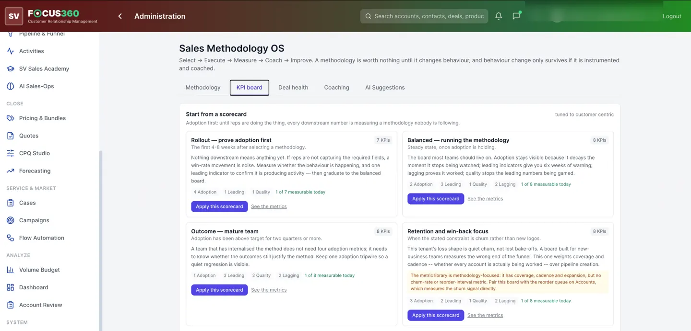
Sales methodology
Structured sales execution workflows.
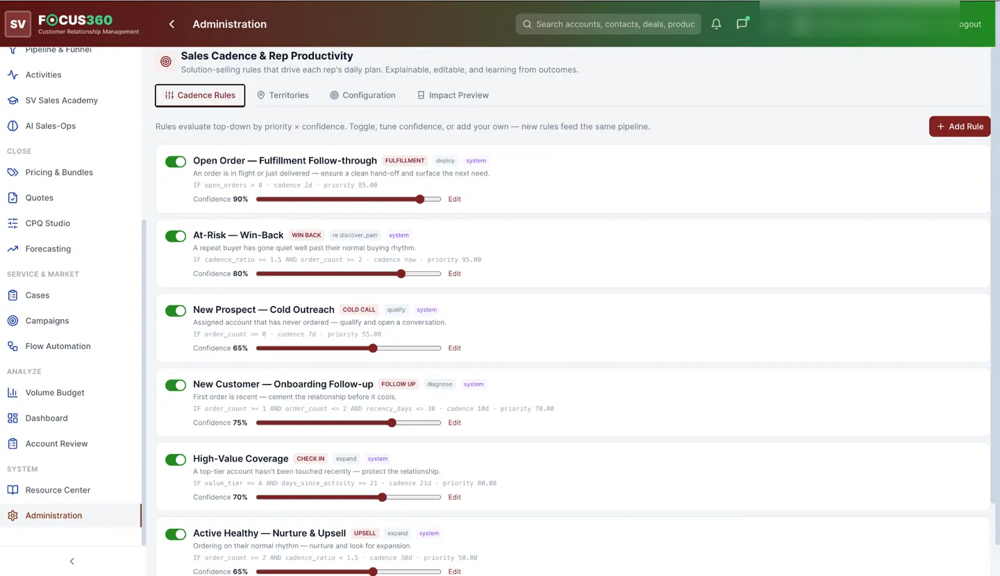
Sales cadence
Coordinated sales activity and follow-through.
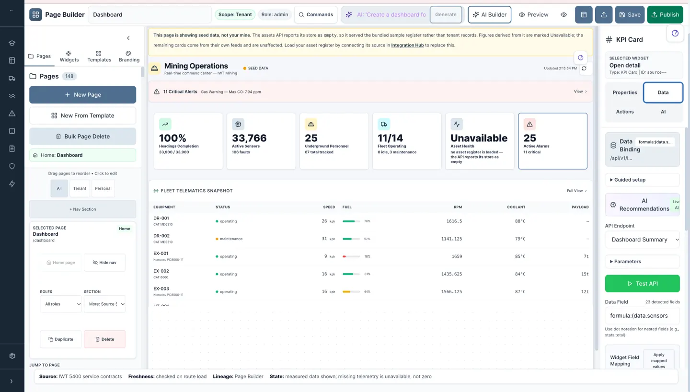
No-code page builder
Create the application experience visually.